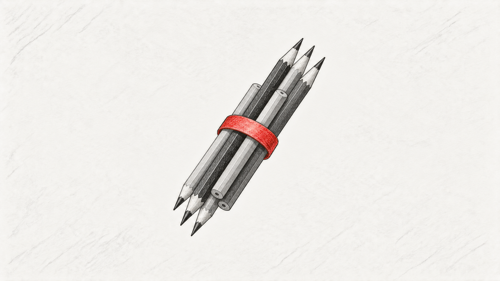
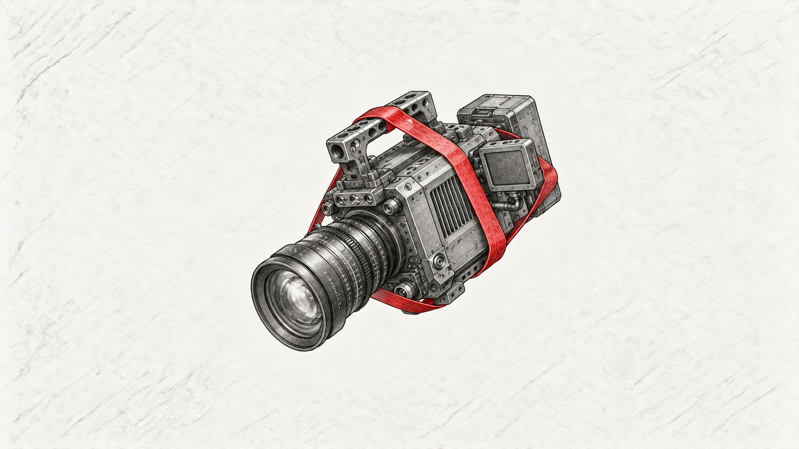
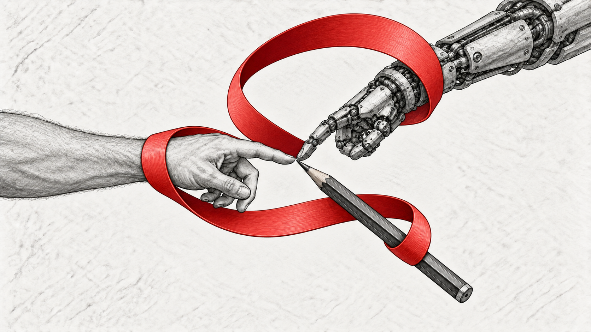
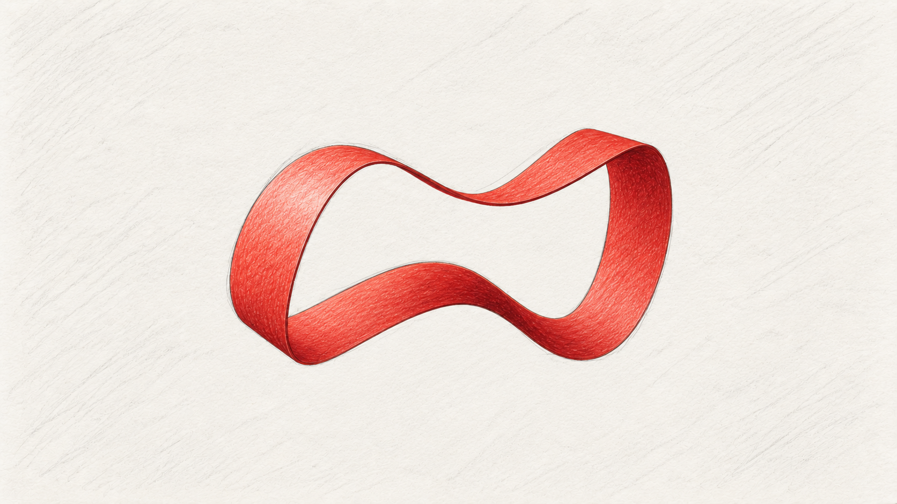
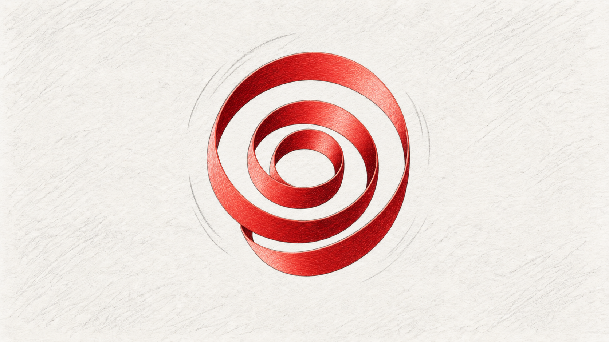
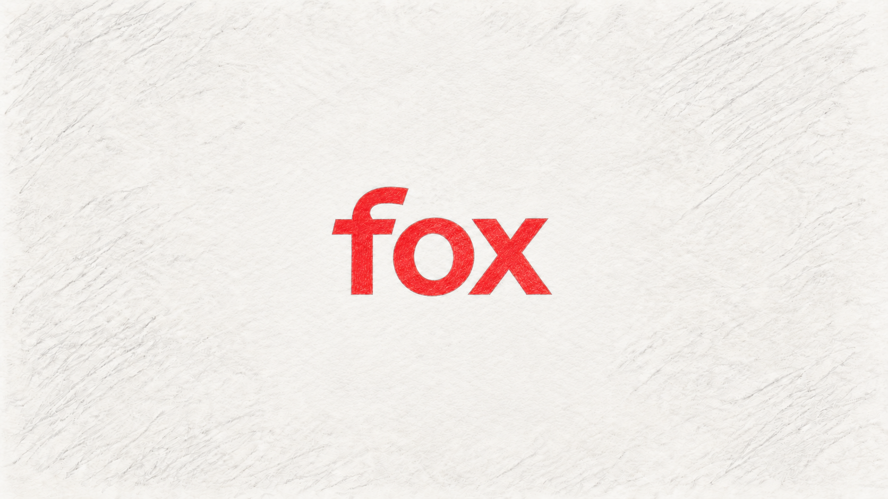

See it before
you make it.
Rapid visual development used to turn an abstract brand device into shots, sequences and motion behaviours before the production pipeline gets expensive.
From brand device
to motion language.
The presentation boards carry the idea, VO and action together — useful for aligning creative, client and production before full motion starts.
Turn the abstract
into shots.
Individual frames test how the red loop behaves around creative tools, technology and human interaction, then pushes through ideas of progress, growth and resolution.







Make the decisions
while they're cheap.
The red loop needed to work as more than a static brand asset. Storyboards explored how it could stretch around creative and technical objects, interact with human and machine elements, morph through ideas of progress and growth, and finally resolve into the identity.
The value is less about making beautiful boards for their own sake and more about turning a loose idea into something concrete enough to discuss, challenge and improve before full production.